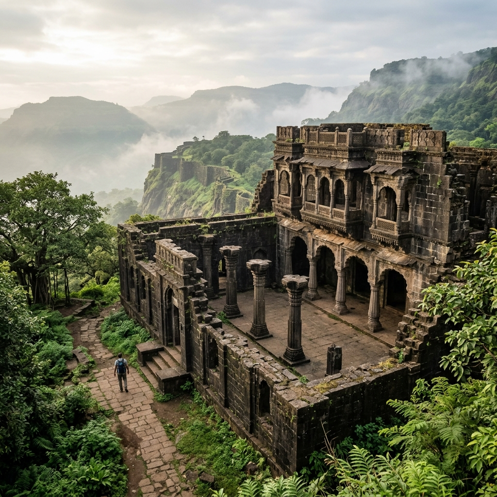

About Fort
Rajgad Fort is one of the most magnificent hill forts in Maharashtra and is often called the "King of Forts" (Durgaraj). Situated at an altitude of approximately 1,395 meters (4,576 feet) above sea level, Rajgad stands proudly in the Sahyadri mountain range about 60 km southwest of Pune.
The fort is spread over a vast area and consists of three major fortified spurs known as Padmavati Machi, Suvela Machi, and Sanjivani Machi, along with the central citadel called Balekilla. Unlike many forts that can be explored in a few hours, Rajgad is so extensive that trekkers often spend an entire day or even stay overnight to fully experience its beauty.
During monsoon, the fort transforms into a paradise of rolling clouds, lush green valleys, waterfalls, and mist-covered ridges, making it one of Maharashtra's most sought-after trekking destinations.
History & Significance
Learn about the historical rise of Rajgad as the crown capital of the Maratha Empire.
Murumbdev Era Early History
Before becoming Rajgad, the fort was known as Murumbdev. It existed long before the rise of the Maratha Empire and was under the control of various local dynasties, serving as a lookout fortress due to its colossal height and steep topography.
The Capture (1647) Rise of Shivaji
Chhatrapati Shivaji Maharaj captured the fort in 1647. Recognizing its immense strategic value, he renamed it Rajgad ("The Royal Fort") and commenced reconstruction, creating the massive stone walls and bastions we see today.
Imperial Capital (1648 – 1674) 26 Years of Rule
Rajgad served as the first capital of the Maratha Empire for nearly 26 years. Many important military strategies, administrative decisions, and campaigns were planned from here. Shivaji Maharaj spent a significant portion of his life here, and Rajaram Maharaj was born on the fort.
Strategic Defense Natural Fortress
Rajgad offered perfect surveillance over surrounding valleys, large water reservoirs for sustainability during long sieges, and strong fortifications with secret escape routes (such as the Chor Darwaza) that made it nearly impregnable.
Major Attractions
Explore the massive spurs, citadel ruins, and viewpoints across Rajgad's vast plateau.



Travel Guide
Routes to reach Gunjavane base village from Pune and Mumbai.
By Train
Travel to Pune Junction or Shivajinagar station. From Pune, you can board local buses or take a taxi to Gunjavane Village via Nasrapur.
Cost: ₹250 – ₹500 ApproxBy Bus
Route: Pune -> Nasrapur -> Velhe -> Gunjavane. Board a state transport (ST) bus from Swargate Bus Stand in Pune to Velhe or Margasani, then take local transit to Gunjavane (approx 2–3 hours travel time).
Cost: ₹100 – ₹180 ApproxBy Car
From Pune (60 km): Follow Pune -> Katraj -> Nasrapur -> Margasani ->
Gunjavane (approx 2–2.5 hours).
From Mumbai (180 km): Take Mumbai-Pune Expressway -> Exit at Pune
bypass -> Katraj -> Nasrapur -> Gunjavane (approx 4–5 hours). Direct parking is
available at the base village.
Trekking Guide
Explore the trail comparisons and recommended itineraries.
Gunjavane Route
Popular / BeginnerDistance: 4 - 5 km
Ascent: 2.5 – 3.5 Hours
Terrain: Rocky patches, forest covers, gradual climb. Clearly marked.
Pali Route
Steeper StepsDistance: 5 km
Ascent: 3 – 4 Hours
Terrain: Stone steps and wider trails. Challenging and less crowded.
Bhutonde Route
Experienced OnlyDistance: 6 km
Ascent: 3.5 – 5 Hours
Terrain: Dense vegetation, steeper, secret back-door ridge path.
One-Day Trek Itinerary
6:00 AM: Start trek from Gunjavane base village.
9:00 AM: Reach Padmavati Machi and rest.
10:00 AM - 1:00 PM: Climb Balekilla Citadel & explore Suvela Machi.
2:00 PM: Start descending back to base.
5:00 PM: Reach base village by evening.
Overnight Trek Itinerary
Day 1 Evening: Climb to fort by evening and pitch tents or stay in the
basic shelter at Padmavati Temple.
Day 2 Morning: Watch the spectacular sunrise. Explore Balekilla, Suvela
Machi, and Sanjivani Machi after breakfast.
Day 2 Afternoon: Descend back to the base.
Essential Information
Important planning details for food, accommodation, and weather.
Stay & Accommodation
Basic overnight shelter is available inside the historic Padmavati Temple (fits several trekkers). Pitching tents on Padmavati Machi is highly popular. For comfort, simple homestays and local guest rooms are available at Gunjavane and Pali base villages.
Food & Catering
Local villagers serve simple and delicious Maharashtrian meals like Pitla-Bhakri, Poha, Misal, and hot ginger tea at the base and Gunjavane. Tiny local stalls pop up on the fort during weekends, but carry dry fruits, energy snacks, and at least 3 liters of water.
Best Time to Visit
Monsoon (June - Sept): Paradise of rolling clouds, waterfalls, and lush
green ridges. Trails can be slippery, requiring caution.
Post-Monsoon (Oct - Feb): Best overall time with pleasant weather, cool
nights for camping, and clear skies.
Summer (March - May): Extremely hot, dry, and not recommended.
Safety & Guidelines
• Avoid trekking during heavy rainfall red alerts.
• Keep the historical monument clean; carry your trash back down.
• Sturdy footwear with high traction is highly recommended due to scree.